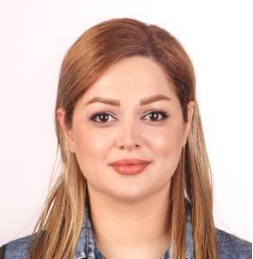

Researching how machines understand image quality and aesthetics.
Doctoral Researcher · University of Groningen
I am Maedeh Daryanavard Chounchenani, a Computer Science researcher with a strong interest in Computer Vision, Image Quality Assessment, and Image Aesthetic Analysis. My current Ph.D. research focuses on Semantic Image Aesthetic Quality Assessment, investigating intelligent methods for understanding how image content, attributes, and scene semantics influence aesthetic perception.
Education
Science and Engineering, University of Groningen, The Netherlands
Supervisor: Prof. Dr. Ir. G.N. (Georgi) Gaydadjiev
Project: Semantic Image Aesthetic Quality Assessment
Previous Degrees
Master’s Degree, Computer Engineering · 2016–2018
University of Lahijan, Iran
Thesis: Non-distortion-specific no-reference Image Quality Assessment using Statistical Features
GPA: 19.14/20
Bachelor’s Degree, Computer Engineering · 2010–2014
University of Lahijan, Iran
Thesis: Design and Development of Clinic Information System
GPA: 15.85/20

Professional journey and academic experience
My experience combines long-term teaching practice with doctoral-level research in image analysis, computational aesthetics, and machine learning.
Doctoral Researcher · Bernoulli Institute
Conducting research on image aesthetics and computational analysis of visual content under the supervision of Prof. Dr. Ir. G.N. (Georgi) Gaydadjiev. The work focuses on semantic image aesthetic quality assessment and interpretable approaches to understanding aesthetic perception.
Teacher · Shahresabz School
Worked as a full-time teacher for many years, building strong communication, mentoring, and instructional skills alongside technical and academic development.
Software & Programming
Python, MATLAB, MySQL, Microsoft Access
Computer Vision
OpenCV, Scikit-image, Vision Transformer
Machine Learning
Keras, PyTorch, TensorFlow, Scikit-learn, Pandas
Other Tools
Adobe Photoshop, Illustrator, Corel Draw, Freehand MX, GIS
Publications, awards, and academic highlights
My scientific work centers on image quality assessment, computational aesthetics, and deep learning methods for visual understanding.
Non-distortion-specific no-reference image quality assessment using Statistical Features
Research on no-reference image quality assessment using statistical features for quality prediction without distortion-specific assumptions.
Deep learning based image aesthetic quality assessment – a review
A review of deep learning approaches for image aesthetic quality assessment, summarizing datasets, models, and open research directions.
Do scenes matter? analyzing scene-aware attribute learning for image aesthetics
An investigation into the role of scene-aware attribute learning in aesthetic prediction and semantic understanding of visual quality.
Awards
- Best Student Researcher, Department of Computer Engineering, University of Lahijan, Iran · 2018
- Highest GPA among Computer Engineering students of the 2016 class, University of Lahijan, Iran · 2018
Research Focus
- Image Aesthetic Quality Assessment
- No-reference Image Quality Assessment
- Scene-aware Aesthetic Analysis
- Deep Learning for Visual Perception
- Semantic Understanding of Image Content
Let’s connect
I am interested in research collaborations, academic networking, and conversations around computer vision, image aesthetics, and machine learning.
Contact Information
Email: M.daryanavard.chounchenani@rug.nl
Phone: (+31) 620772993
Address: Piet Heinstraat 97, 9726JT, The Netherlands
References
Prof. Asadollah Shahbahrami
Associate Professor, University of Guilan, Iran
shahbahrami1@gmail.com
Prof. Dr. Ir. G.N. (Georgi) Gaydadjiev
Full Professor in Computer Architecture, Delft University of Technology, The Netherlands
G.N.gaydadjiev@tudelft.nl